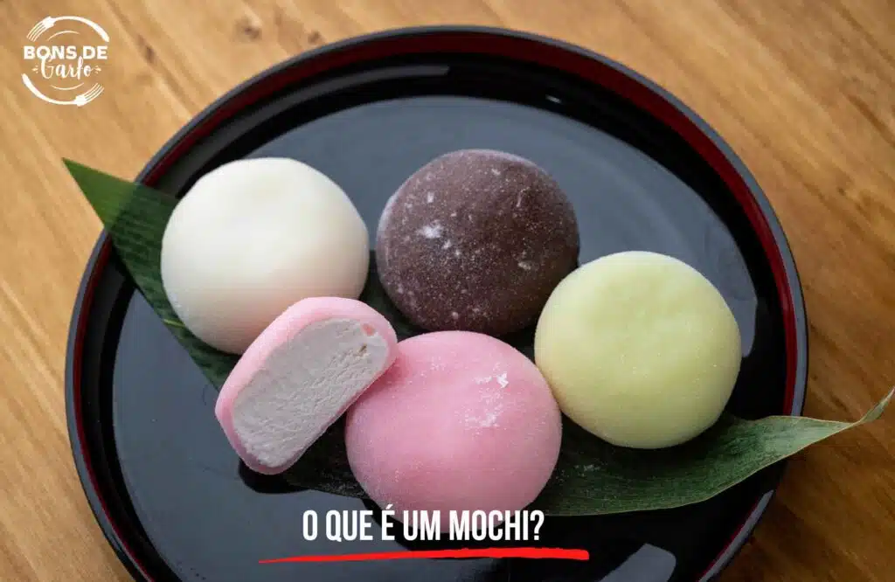
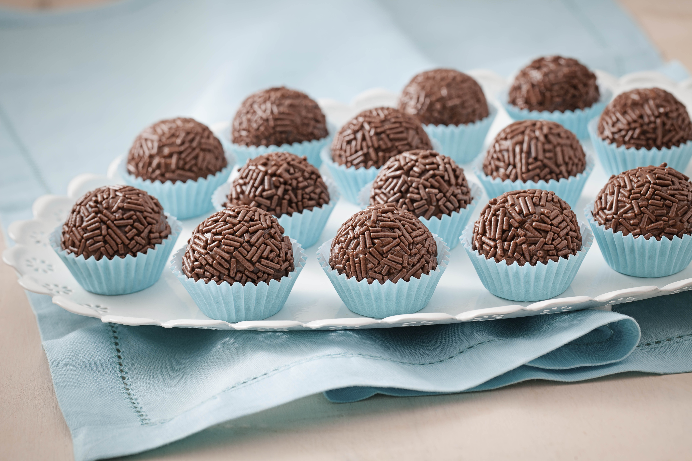
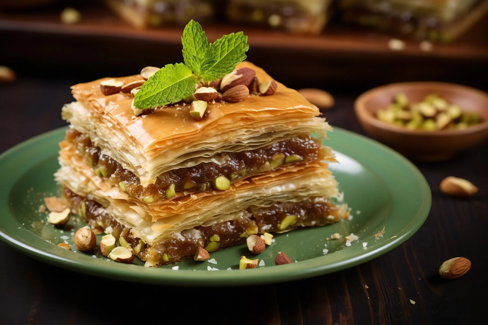
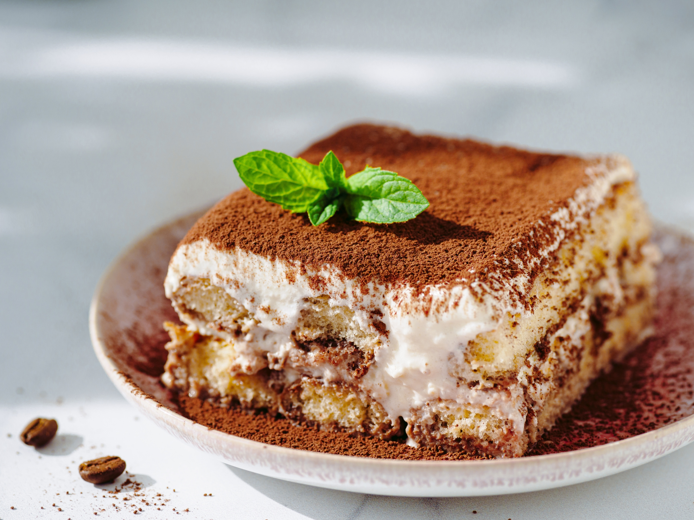
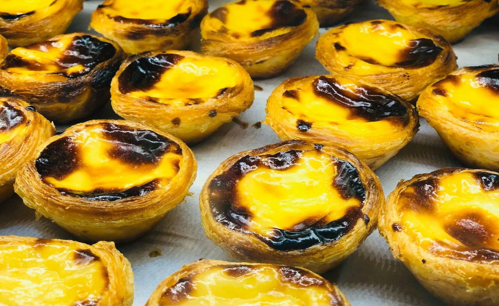

Doces pelo Mundo
Mochi (Japão)
O mochi é um doce japonês feito de arroz glutinoso, com uma textura elástica e pegajosa. Ele pode ser recheado com pasta de feijão doce (anko) ou frutas.
Ingredientes:
- 1 xícara de arroz glutinoso
- Água para cobrir
- Amido de milho para polvilhar
- Recheio de pasta de feijão doce (opcional)
Modo de preparo:
- Deixe o arroz de molho por algumas horas.
- Cozinhe no vapor até ficar macio, depois amasse até ficar elástico.
- Modele em bolinhas e recheie com anko, se desejar. Polvilhe com amido de milho.
Brigadeiro (Brasil)
O brigadeiro é um doce de chocolate muito popular no Brasil, feito com leite condensado e chocolate em pó.
Ingredientes:
- 1 lata de leite condensado
- 2 colheres de sopa de chocolate em pó
- 1 colher de sopa de manteiga
- Granulado para cobrir
Modo de preparo:
- Em uma panela, misture o leite condensado, o chocolate e a manteiga.
- Cozinhe em fogo médio, mexendo até desgrudar do fundo da panela.
- Deixe esfriar, modele em bolinhas e passe no granulado.
Baklava (Oriente Médio)
A baklava é uma sobremesa folhada recheada com nozes e regada com calda de mel, muito apreciada na Turquia e Grécia.
Ingredientes:
- 500g de massa folhada (filo)
- 200g de nozes trituradas
- 1 xícara de manteiga derretida
- 1 xícara de mel
- 1/2 xícara de água
Modo de preparo:
- Distribua camadas de massa folhada com manteiga derretida e nozes.
- Asse até dourar e cubra com uma calda de mel e água.
Tiramisu (Itália)
O tiramisu é uma sobremesa italiana feita com camadas de biscoito embebido em café e creme mascarpone.
Ingredientes:
- 200g de biscoito champagne
- 2 xícaras de café forte
- 300g de mascarpone
- 3 colheres de açúcar
- Cacau em pó para polvilhar
Modo de preparo:
- Molhe os biscoitos no café e faça camadas com o creme de mascarpone.
- Polvilhe cacau em pó e leve à geladeira antes de servir.
Pastel de Nata (Portugal)
O pastel de nata é uma famosa tortinha de creme feita com massa folhada e recheio de creme de ovos.
Ingredientes:
- 1 rolo de massa folhada
- 500ml de leite
- 5 gemas
- 200g de açúcar
- 1 colher de chá de essência de baunilha
Modo de preparo:
- Prepare o creme com leite, açúcar, gemas e baunilha.
- Distribua o creme em forminhas com massa folhada e asse até dourar.
Churros (Espanha)

Os churros são doces fritos e polvilhados com açúcar e canela, muito populares na Espanha e na América Latina.
Ingredientes:
- 1 xícara de água
- 1 colher de sopa de manteiga
- 1 xícara de farinha de trigo
- Açúcar e canela para polvilhar
Modo de preparo:
- Ferva a água com manteiga e misture a farinha até formar uma massa homogênea.
- Molde os churros, frite e polvilhe com açúcar e canela.
Cheesecake (Estados Unidos)

O cheesecake é uma torta de queijo suave, geralmente servida com calda de frutas.
Ingredientes:
- 200g de biscoitos triturados
- 100g de manteiga derretida
- 500g de cream cheese
- 1 xícara de açúcar
- 1 colher de chá de essência de baunilha
- Calda de frutas para servir
Modo de preparo:
- Misture os biscoitos com manteiga para fazer a base.
- Bata o cream cheese com açúcar e baunilha, coloque sobre a base e leve à geladeira.
- Sirva com a calda de frutas de sua preferência.